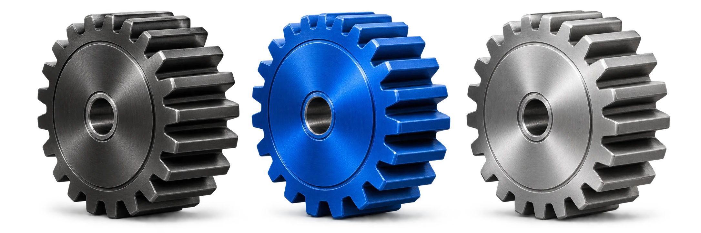

1VAtrair
Vender mais.
Coloque sua oficina na frente de quem está procurando pelo serviço que você oferece.
- Campanhas com intenção de compra
- Sites e criativos que explicam sua oferta
- Estratégia voltada ao cliente pessoa física
Da primeira mensagem ao cliente que volta. Marketing, atendimento e gestão trabalhando juntos.

Coloque sua operação
em sintonia.
Mais clientes, uma equipe que atende melhor e um dono que sabe o que acontece no próprio negócio.
Conectamos estratégia de marketing, processo comercial e tecnologia própria para ajudar sua oficina a vender mais, vender melhor e trazer o cliente de volta.
Da mecânica geral às redes de autocenters. O trabalho começa entendendo a sua operação, seus números e o que precisa mudar.
Assessoria para conectar aquisição de clientes, atendimento e recorrência.
Conhecer a assessoriaChatEngrena para ganhar agilidade, acompanhar a equipe e enxergar a operação.
Explorar o ChatEngrenaAnúncios trazem oportunidades.
O que acontece depois também precisa funcionar.
Coloque sua oficina na frente de quem está procurando pelo serviço que você oferece.
Transforme mensagens em conversas bem conduzidas e orçamentos acompanhados.
Continue presente depois do serviço e dê ao cliente um motivo para voltar.
Uma plataforma feita para facilitar a vida de quem atende e de quem precisa enxergar o negócio inteiro.
A equipe enxerga a conversa, o responsável e a próxima etapa.
Avisos pelo WhatsApp e relatórios para acompanhar a operação.
O histórico organiza o ponto de partida.
Rotinas e contatos no momento adequado.
Reativação para a próxima necessidade do cliente.
Exemplo visual de fluxo. A interface final da plataforma pode variar.
Respostas automáticas com contexto, apoiando o trabalho dos seus atendentes.
Receba e realize chamadas, distribua atendimentos e organize o funil em kanban.
Relatórios de faturamento, atendimento e desempenho. Atualizações direto no seu WhatsApp.
Integração via API com Google Ads e Meta Ads para melhorar os sinais de conversão.
Resultados apresentados por oficinas que trabalharam com a ENGRENA. Cada operação tem seu contexto, seu ritmo e seus desafios.
Para cada R$ 1 investido,
R$ 21,35 em retorno.
Abril de 2025R$ 227,9 mil
Maio de 2025R$ 213,7 mil
Junho de 2025R$ 231,3 mil
Dados do material comercial. A identificação do cliente foi preservada.
Fonte: Apresentação Express, página 18.Gerados pelo sistema de acompanhamento após o serviço em um dos cases.
Maio de 2025. Apresentação Express, página 28.De ticket médio entre os clientes vindos da assessoria em outro case.
Junho de 2025. Apresentação Express, página 17.Casos distintos, dados históricos e anonimizados. Resultados anteriores não representam garantia de faturamento.
Este espaço vai receber os depoimentos em vídeo dos nossos clientes.
A mensagem sem resposta. O orçamento esquecido. O cliente que nunca mais voltou. Pequenas falhas de rotina também pesam no caixa.
Ilustração proporcional de R$ 1 por segundo. O valor começa do zero e não representa uma estimativa de perda da sua oficina.
Quero mudar esse cenárioVamos entender onde a sua operação está travando e definir o próximo passo.
Estratégia e execução da ENGRENA.Vamos ao que importa para o dono da oficina.
A ENGRENA conecta atração, atendimento, processo comercial, acompanhamento de desempenho e recorrência. Os anúncios fazem parte do trabalho. O método e o ChatEngrena ajudam a fazer a oportunidade avançar dentro da oficina.
Faz sentido entender o que acontece depois do clique: quem atende, como os orçamentos são acompanhados e o que faz o cliente voltar. Nossa especialização é a operação de oficinas automotivas. A conversa serve para identificar o que sua estrutura precisa e se a ENGRENA é adequada para ela.
O pacote é ajustado ao momento, aos objetivos e à estrutura de cada oficina. A avaliação considera o trabalho completo, que pode reunir estratégia, campanhas, sites, criativos, tecnologia e processo comercial. O escopo é explicado antes de qualquer decisão.
Sim. A plataforma tem uma jornada própria. Conte como seu atendimento funciona hoje e nossa equipe apresenta as possibilidades adequadas para sua operação.
O ChatEngrena foi feito para facilitar o trabalho da equipe, automatizando respostas e rotinas e organizando as etapas. Pessoas continuam importantes nas negociações, nas decisões e nas situações que exigem contexto.
Esse é o perfil que priorizamos, mas recebemos outros interessados. Informe seu momento no formulário para avaliarmos juntos se existe um caminho adequado.
Sim. É um trabalho em conjunto. A ENGRENA estrutura estratégia, tecnologia e acompanhamento. A oficina participa com informações, envolvimento da equipe e execução dos processos combinados. Não prometemos faturamento garantido.
Sim. Atendemos mecânicas, autocenters, lojas de pneus, especialistas e redes em todo o Brasil. Depois do primeiro contato, a equipe combina a reunião pelo WhatsApp.